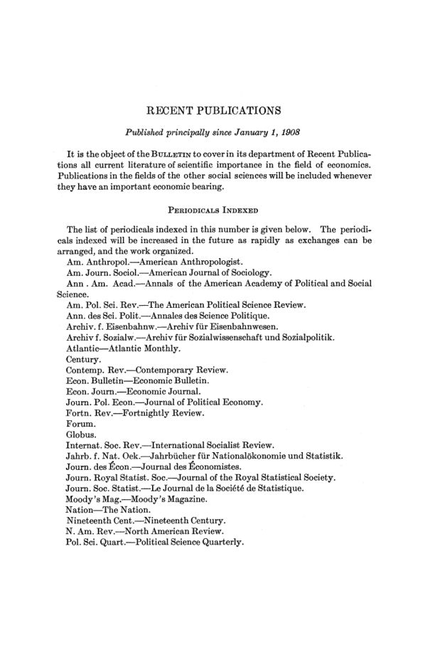

O Economic Bulletin estreia: notas, resenhas e bibliografia
Leitura: 4 min
O primeiro número do boletim trimestral da associação: notas sobre nomeações e investigações, 28 resenhas de livros, a quinta lista de teses em andamento e uma bibliografia corrente em seções.


Em abril de 1908, a American Economic Association lançou um periódico que não publicaria artigos originais. O editorial de abertura do The Economic Bulletin diz que ele seria uma espécie de revista de ofício para quem estuda economia de forma científica, e uma revisão de revisões. O editor-gerente era E. W. Kemmerer, da Cornell University, com 21 editores de departamento, de estatística a administração municipal.
Uma espécie de “revista de ofício” para todos os interessados no estudo científico de questões econômicas. (a sort of "trade journal" for all interested in the scientific study of economic questions)
As notas registram também a reunião do Comitê Executivo de 14 de março, no City Club de Nova York, que liberou a Macmillan do contrato de distribuição e rebatizou as Publications como American Economic Association Quarterly, por causa de uma decisão dos correios sobre tarifas postais.
O boletim “não defenderá nem promoverá nenhuma das reformas”. (will not advocate or promote any of the reforms)
O que contavam as notas?
As Personal and Miscellaneous Notes registram nomeações, investigações e instituições novas. Harvard cria uma Graduate School of Business Administration, só para graduados, com Edwin F. Gay como diretor. O Bureau of Corporations investiga as indústrias do ferro e aço, do tabaco e da madeira, as bolsas de algodão e o transporte hidroviário. As novas Public Service Commissions de Nova York recrutam estatísticos. A Universidade de Wisconsin recebe a biblioteca de literatura socialista alemã de Hermann Schlüter.
Três notas são assinadas. John R. Commons descreve a lei de serviços públicos de Wisconsin de 1907, que iguala empresas privadas e municipais diante da comissão estadual. Wm. J. Meyers comenta a lei da Public Service Commission de Nova York. Harrison Standish Smalley examina os litígios sobre tarifas ferroviárias fixadas pelos estados, da Carolina do Norte e Alabama a Minnesota.
Que livros foram resenhados?
São 28 resenhas assinadas. Na teoria, F. W. Taussig resenha J. B. Clark, e T. N. Carver, Irving Fisher. Ferrovias ocupam quatro resenhas seguidas, de Haines a Dewsnup. Tributação aparece com os anais da primeira conferência da National Tax Association e o estudo de Max West sobre o imposto sobre heranças. Commons resenha três obras sobre o movimento operário nos Estados Unidos. A sociologia fecha o bloco, com Sumner, Ross, Forrest e Morgan.
Como se organizava a bibliografia?
A quinta lista de teses de doutorado em economia política em andamento, de 1º de janeiro de 1908, reúne candidatos de Bryn Mawr, Columbia, Cornell e Harvard a Wisconsin, Chicago e Califórnia. Há candidatos do Japão e um da China, que estuda as doutrinas econômicas de Confúcio; John Maurice Clark prepara em Columbia uma teoria das tarifas ferroviárias. Fecha o número a seção Recent Publications, com a lista dos periódicos indexados e livros e artigos publicados sobretudo desde janeiro de 1908, em seções numeradas até a XVIII. Nela aparece o próprio Hand Book de 1908, com as atas da vigésima reunião anual, em Madison.
Na minha leitura
Na minha leitura, o boletim é uma aposta em infraestrutura de informação, não em doutrina. Notas, resenhas e bibliografia reduzem o custo de busca de uma profissão dispersa por dezenas de universidades e repartições,. As notas mostram ainda para onde ia a demanda por economistas em 1908: comissões reguladoras, o Bureau of Corporations e comissões de tributação, onde avaliação de ativos, contabilidade uniforme e estatística de custos viravam instrumentos de política.
Glossário
- Revisão de revisões (review of reviews)
- periódico que resume e indexa o que saiu em outras publicações, em vez de publicar pesquisa original.
- Public Service Commission
- comissão estadual que regula empresas de serviços públicos, como ferrovias, gás e eletricidade.
- Bureau of Corporations
- órgão federal americano criado para investigar grandes empresas e setores industriais.
Artigos desta edição
- Personal and Miscellaneous Notes — editores; notas assinadas por John R. Commons, Wm. J. Meyers e Harrison Standish Smalley (pp. 1–19). Editorial de abertura, dados do Hand Book de 1908, notas sobre nomeações, investigações e novas instituições e três notas assinadas: a lei de serviços públicos de Wisconsin, a lei da Public Service Commission de Nova York e os litígios sobre tarifas ferroviárias estaduais. JSTOR
- J. B. Clark, Essentials of Economic Theory — F. W. Taussig (pp. 20–22). O resenhista descreve um livro em duas partes: a estática, que reexpõe a Distribution of Wealth, e a dinâmica, que reúne e reorganiza textos publicados em periódicos. JSTOR
- Pierre Leroy-Beaulieu, The United States in the Twentieth Century — E. L. Bogart (pp. 22–24). Segundo o resenhista, o livro populariza os resultados do décimo segundo censo federal para descrever, em quatro partes, o progresso material dos Estados Unidos. JSTOR
- Irving Fisher, The Rate of Interest — T. N. Carver (pp. 25–26). O resenhista apresenta uma teoria do juro do tipo “agio”, atribuída por Fisher a Rae, Böhm-Bawerk e Landry, reformulada com o conceito de renda de The Nature of Capital and Income. JSTOR
- Ernest Ludlow Bogart, Economic History of the United States — Charles H. Hull (pp. 26–29). O resenhista descreve um livro-texto que divide a história econômica americana em quatro períodos, do desenvolvimento colonial à integração econômica de 1860 a 1906. JSTOR
- J. Laurence Laughlin, Industrial America — Frank L. McVey (pp. 29–30). Sete conferências feitas na Universidade de Berlim em 1906, para leitores gerais, sobre protecionismo, trabalho, trustes, ferrovias e bancos. JSTOR
- Rufus Farrington Sprague, The True Nature of Value — T. N. Carver (pp. 30). Teoria do valor de um homem de negócios centrada no serviço, medido pelo obstáculo superado ou pelo trabalho poupado a quem o recebe. JSTOR
- F. Dawtrey Drewitt, Bombay in the Days of George IV — Jacob H. Hollander (pp. 31–33). Memórias de Sir Edward West, autor do ensaio de 1815 sobre a aplicação de capital à terra, com documentos inéditos de sua passagem pela magistratura em Bombaim. JSTOR
- Henry S. Haines, Railway Corporations as Public Servants — Willard C. Fisher (pp. 33–35). Segundo o resenhista, um esboço do desenvolvimento da ferrovia americana como sistema, com trechos de análise e sugestões de política. JSTOR
- W. Z. Ripley, Railway Problems — Emory R. Johnson (pp. 35–36). Coletânea de textos e de decisões da Interstate Commerce Commission sobre regulação de tarifas, com introdução de Ripley e dois ensaios seus. JSTOR
- Logan G. McPherson, The Working of the Railroads — Carroll W. Doten (pp. 36–38). Conferências do curso de transportes da Johns Hopkins que expõem os princípios da prática ferroviária do ponto de vista de um ferroviário. JSTOR
- Ernest Ritson Dewsnup (org.), Railway Organization and Working — Carroll W. Doten (pp. 38–39). Reúne palestras de dirigentes ferroviários sobre as funções de seus departamentos, feitas na Universidade de Chicago entre 1904 e 1906. JSTOR
- Burton J. Hendrick, The Story of Life Insurance — Maurice H. Robinson (pp. 39–41). Segundo o resenhista, um relato das práticas de gestão da Mutual Life, da New York Life e da Equitable, baseado em autos judiciais e relatórios de comissões de investigação. JSTOR
- James Henry Gilbert, Trade and Currency in Early Oregon — W. L. Whittelsey (pp. 41–43). Tese sobre comércio e moeda no Oregon de 1785 a 1865, centrada em como os meios de troca locais moldaram as relações comerciais de uma região isolada. JSTOR
- National Tax Association, State and Local Taxation: First National Conference — Carl C. Plehn (pp. 44–47). Discursos e atas da primeira conferência nacional da National Tax Association, em Columbus, Ohio, em novembro de 1907, e as resoluções que se tornaram sua plataforma. JSTOR
- Max West, The Inheritance Tax — Carl C. Plehn (pp. 48–49). Segunda edição, revista e ampliada, de estudo sobre o imposto sobre heranças que incorpora a legislação dos catorze anos anteriores; o autor defende que o tributo fique com os estados. JSTOR
- James M. Motley, Apprenticeship in American Trade Unions — John R. Commons (pp. 49–50). Pesquisa sobre como os sindicatos americanos regulam a aprendizagem, com classificação dos sindicatos e um modelo de acordo entre patrões e sindicatos. JSTOR
- Hermann Schlüter, Die Anfänge der deutschen Arbeiterbewegung in Amerika — John R. Commons (pp. 50–51). História do movimento operário e comunista alemão nos Estados Unidos, de 1848 à Guerra Civil, baseada em papéis e jornais originais. JSTOR
- George E. Barnett (org.), A Trial Bibliography of American Trade-Union Publications — John R. Commons (pp. 51–52). Segunda edição da bibliografia do seminário econômico da Johns Hopkins, com estatutos, atas de convenções e publicações oficiais de sindicatos. JSTOR
- Gottlieb Schnapper-Arndt, Sozialstatistik — William B. Bailey (pp. 52–53). Lições póstumas sobre estatística de população, econômica e moral, organizadas por Leon Zeitlin, que abrem com uma história da estatística. JSTOR
- H. G. Wells, New Worlds for Old — Frank A. Fetter (pp. 53–55). Segundo o resenhista, uma exposição e defesa do socialismo para o grande público, centrada na ideia de introduzir desenho deliberado na ação social. JSTOR
- Frank Podmore, Robert Owen: A Biography — David A. McCabe (pp. 55–58). Biografia em dois volumes que usa a correspondência de Owen posterior a 1822, recuperada depois de décadas perdida. JSTOR
- Alfred L. Hutchinson, The Limit of Wealth — R. Pritchard (pp. 58). Utopia em que um comitê imaginário visita os Estados Unidos de 1942, onde um limite ao que se pode deixar de herança financia obras e serviços públicos. JSTOR
- William Graham Sumner, Folkways — Ulysses G. Weatherly (pp. 58–61). Estudo de como usos, costumes e mores surgem de tentativas repetidas de satisfazer necessidades e se tornam fenômenos de massa. JSTOR
- Edward Alsworth Ross, Sin and Society — Charles A. Ellwood (pp. 61–63). Ensaios sobre a moralidade pública e empresarial que sustentam que a ética de uma sociedade agrícola não basta para uma sociedade industrial e urbana. JSTOR
- J. Dorsey Forrest, The Development of Western Civilization — Charles A. Ellwood (pp. 63–65). Ampliação de uma tese de doutorado que interpreta psicologicamente a evolução ética, econômica e política dos povos ocidentais. JSTOR
- Lewis Morgan, Ancient Society — Ulysses G. Weatherly (pp. 65–66). Reimpressão sem revisão da obra de 1877 sobre a organização social primitiva, que o resenhista usa para resumir o estado do debate. JSTOR
- Frederick Webb Hodge (org.), Handbook of American Indians North of Mexico, parte I — Ulysses G. Weatherly (pp. 67). Primeira parte, de A a M, de um dicionário, enciclopédia e bibliografia do Bureau of American Ethnology, com 46 colaboradores. JSTOR
- W. S. Harwood, The New Earth — Frank L. McVey (pp. 67–68). Apresentação popular da agricultura moderna nos Estados Unidos, da inoculação do solo à silvicultura e à criação de animais. JSTOR
- Fifth List of Doctoral Dissertations in Political Economy in Progress in American Universities and Colleges, January 1, 1908 — compilada pelo Economic Bulletin (pp. 69–75). Lista por instituição, com nome, formação, tema e data provável de conclusão de cada candidato, a partir de circular às instituições do Conselho da associação. JSTOR
- Recent Publications (pp. 76–105). Bibliografia corrente, sobretudo de obras publicadas desde 1º de janeiro de 1908, precedida da lista de periódicos indexados e dividida em seções temáticas numeradas, com livros e artigos. JSTOR
Fontes
- Personal and Miscellaneous Notes (pp. 1–19). JSTOR · Internet Archive (PDF)
- [untitled] The Economic Bulletin, (1908-04-01), pages 20-22 (pp. 20–22). JSTOR · Internet Archive (PDF)
- [untitled] The Economic Bulletin, (1908-04-01), pages 22-24 (pp. 22–24). JSTOR · Internet Archive (PDF)
- [untitled] The Economic Bulletin, (1908-04-01), pages 25-26 (pp. 25–26). JSTOR · Internet Archive (PDF)
- [untitled] The Economic Bulletin, (1908-04-01), pages 26-29 (pp. 26–29). JSTOR · Internet Archive (PDF)
- [untitled] The Economic Bulletin, (1908-04-01), pages 29-30 (pp. 29–30). JSTOR · Internet Archive (PDF)
- [untitled] The Economic Bulletin (1908-04-01), page 30 (pp. 30). JSTOR · Internet Archive (PDF)
- [untitled] The Economic Bulletin, (1908-04-01), pages 31-33 (pp. 31–33). JSTOR · Internet Archive (PDF)
- [untitled] The Economic Bulletin, (1908-04-01), pages 33-35 (pp. 33–35). JSTOR · Internet Archive (PDF)
- [untitled] The Economic Bulletin, (1908-04-01), pages 35-36 (pp. 35–36). JSTOR · Internet Archive (PDF)
- [untitled] The Economic Bulletin, (1908-04-01), pages 36-38 (pp. 36–38). JSTOR · Internet Archive (PDF)
- [untitled] The Economic Bulletin, (1908-04-01), pages 38-39 (pp. 38–39). JSTOR · Internet Archive (PDF)
- [untitled] The Economic Bulletin, (1908-04-01), pages 39-41 (pp. 39–41). JSTOR · Internet Archive (PDF)
- [untitled] The Economic Bulletin, (1908-04-01), pages 41-43 (pp. 41–43). JSTOR · Internet Archive (PDF)
- [untitled] The Economic Bulletin, (1908-04-01), pages 44-47 (pp. 44–47). JSTOR · Internet Archive (PDF)
- [untitled] The Economic Bulletin, (1908-04-01), pages 48-49 (pp. 48–49). JSTOR · Internet Archive (PDF)
- [untitled] The Economic Bulletin, (1908-04-01), pages 49-50 (pp. 49–50). JSTOR · Internet Archive (PDF)
- [untitled] The Economic Bulletin, (1908-04-01), pages 50-51 (pp. 50–51). JSTOR · Internet Archive (PDF)
- [untitled] The Economic Bulletin, (1908-04-01), pages 51-52 (pp. 51–52). JSTOR · Internet Archive (PDF)
- [untitled] The Economic Bulletin, (1908-04-01), pages 52-53 (pp. 52–53). JSTOR · Internet Archive (PDF)
- [untitled] The Economic Bulletin, (1908-04-01), pages 53-55 (pp. 53–55). JSTOR · Internet Archive (PDF)
- [untitled] The Economic Bulletin, (1908-04-01), pages 55-58 (pp. 55–58). JSTOR · Internet Archive (PDF)
- [untitled] The Economic Bulletin (1908-04-01), page 58 (pp. 58). JSTOR · Internet Archive (PDF)
- [untitled] The Economic Bulletin, (1908-04-01), pages 58-61 (pp. 58–61). JSTOR · Internet Archive (PDF)
- [untitled] The Economic Bulletin, (1908-04-01), pages 61-63 (pp. 61–63). JSTOR · Internet Archive (PDF)
- [untitled] The Economic Bulletin, (1908-04-01), pages 63-65 (pp. 63–65). JSTOR · Internet Archive (PDF)
- [untitled] The Economic Bulletin, (1908-04-01), pages 65-66 (pp. 65–66). JSTOR · Internet Archive (PDF)
- [untitled] The Economic Bulletin (1908-04-01), page 67 (pp. 67). JSTOR · Internet Archive (PDF)
- [untitled] The Economic Bulletin, (1908-04-01), pages 67-68 (pp. 67–68). JSTOR · Internet Archive (PDF)
- Fifth List of Doctoral Dissertations in Political Economy in Progress in American Universities and Colleges, January 1, 1908 (pp. 69–75). JSTOR · Internet Archive (PDF)
- Recent Publications (pp. 76–105). JSTOR · Internet Archive (PDF)
- Sumário da edição no JSTOR: The Economic Bulletin, vol. 1, nº 1.
Documento em domínio público (EUA, publicado antes de 1931), via JSTOR Early Journal Content e Internet Archive. Resumo e comentário do autor deste site, sem afiliação com a American Economic Association. Encontrou um erro? Escreva: a correção é publicada no próprio texto, com data.
← Nº 88 · Madison, 1907: o pânico, o Tesouro e o que conta como renda Nº 90 · Heilman, 1908: cinquenta anos de concessões dos bondes de Chicago →